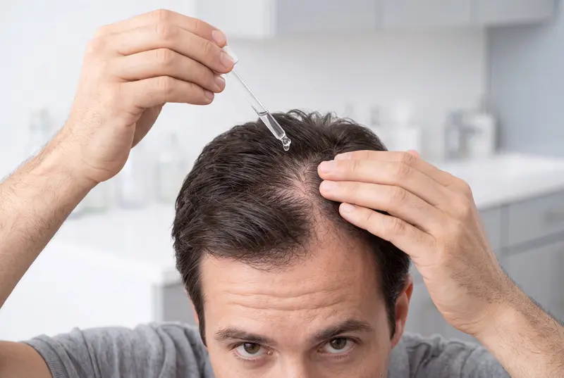

Entenda as opções de tratamento para queda capilar
Conheça como cada parte do protocolo funciona, o tempo esperado de evolução e como é o acompanhamento. A indicação é personalizada e definida pelo médico após avaliar o seu caso.
Conheça o que pode compor o seu protocolo
O protocolo combina ativos com papéis diferentes. Escolha um objetivo para entender cada parte. Com base no seu questionário, o médico define a composição para o seu caso.

Minoxidil para barba falhada
Creme aplicado direto nas falhas da barba, uma vez por dia, num protocolo de 4 meses. A avaliação tem perguntas e fotos próprias para a barba.
Como funciona o tratamento
- ETAPA 1
Consulta online gratuita
Responda perguntas sobre a sua saúde em poucos minutos.
- ETAPA 2
Avaliação médica
Nossa equipe médica analisa o seu caso e, se indicado, prescreve o tratamento.
- ETAPA 3

Entrega grátis em casa
Manipulado por farmácia credenciada de alta qualidade e entregue na sua casa, sem custo de frete.
- ETAPA 4

Acompanhamento
Você conta com acompanhamento durante todo o tratamento.
O tratamento certo começa pela avaliação
Veja o que acontece antes de começar.
- Duração
- Cerca de 5 minutos, sem sair de casa.
- Cobrança
- Seu cartão é apenas reservado ao final do questionário. A cobrança só acontece se o médico aprovar o tratamento. Se não for indicado, o valor é liberado.
- O que vamos pedir
- Informações de saúde, seu histórico e fotos do couro cabeludo.
- Quem analisa
- Um médico avalia o seu caso e define se há indicação, além do formato e da dose.
- Quando você recebe a resposta
- [Prazo de resposta a confirmar pela operação]